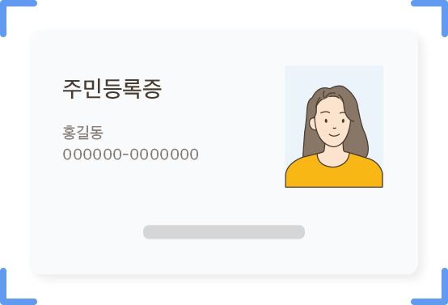

4
/ 7
신분증 확인
주민등록증 또는 운전면허증을 선택하여
신분증 촬영으로 본인임을 확인합니다.

신분증 촬영 TIP을 알려드려요!
빛이 반사되지 않도록 해주시고 어두운 배경에서 촬영해주세요.
훼손이 심한 신분증은 No! 신분증 원본으로 촬영하세요. 정보식별이 어려울 경우 계좌개설이 어려울 수 있어요
신분증은 운전면허증 또는 주민등록증만 가능해요.(주민등록증이 운전면허증보다 인식률이 더 좋아요.)
이전
촬영하기
Camera이(가) 사진 및 동영상을
촬영을(를) 할 수 있도록 허용하 시겠습니까?
거부
허용